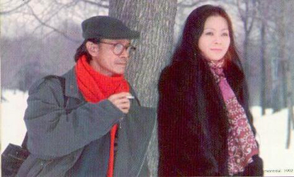

Trịnh Công Sơn viết nhạc từ tuổi đôi mươi cho tới những năm gần đây, cho nên đã cho chúng ta một số lượng tác phẩm rất lớn. Như ở một triết gia đích thực, ở nơi ông nỗi ám ảnh lớn về đời người đã đưa đến ba loại đề tài lớn, là tình yêu, quê hương và thân phận con người, trong đó chiến tranh và đói khổ là sự ngột ngạt bao trùm lên tất cả. Khi chiến tranh đã chấm dứt, và vận nước đã đổi thay, ông thiên về các đề tài mang nhiều triết tính về cuộc đời, nhưng thủy chung vẫn là người viết nhạc tình độc đáo nhất. Nhạc sĩ Văn Cao gọi Trịnh Công Sơn là ca nhân về tình yêu có lẽ là trong ý đó... Từ góc độ của người hát và yêu nhạc, khi nhìn lại Trịnh Công Sơn viết cho tình yêu, Quỳnh Giao muốn được nói lên một sự kiện, đó là từ Trịnh Công Sơn trở đi, các tình khúc đã đổi khác rất nhiều, và nền tân nhạc phải cảm tạ ông về sự khai phá đó... Nói về tình khúc Trịnh
Công Sơn, ta hãy thử nhắm mắt lại để nhìn quanh mà xem... Gió mưa, nắng cát; sông biển, núi non, sa mạc, công viên; lá vàng, sỏi đá; rong rêu, lộc nõn; phố vắng, tháp cổ; mây bay, tóc rối; thân xác, cây già, v.v... ngần ấy hình tượng tản mát đều lấp lánh siêu thực trong các tình khúc của ông. Trịnh Công Sơn là một phù thủy về ngôn ngữ, và căn bản văn hóa Pháp mà ông hấp thụ từ khi còn trẻ có thể phần nào, dù chỉ phần nào thôi, giải thích khả năng dùng chữ đầy ấn tượng lạ kỳ của ông. Phần nào thôi, vì khả năng rất tự nhiên đó, có lẽ ông phải có từ tiền kiếp, nhất là trong lối sử dụng hình dung từ bóng bẩy và hình ảnh bất ngờ mà có sức biểu cảm lớn, như trong hội họa. Ông là một nhà thơ, trước khi là một nhạc sĩ. Ta hãy nghe Ru ta ngậm ngùi chẳng hạn, để bàng hoàng nhớ lại là 30 năm trước ông dùng chữ như thế nào...
Khi tình đã vội quên, tim lăn trên đường mòn Trên giọt máu cuồng điên, con chim đứng lặng câm Khi về trong mùa Đông, tay rong rêu muộn màng Thôi chờ những rạng đông...
Ngoài giá trị của lời ca, điều giải thích vì sao nhạc Trịnh Công Sơn chinh phục người nghe có lẽ là nét nhạc đơn giản, có giá trị ở giai điệu hơn hòa thanh. Nhạc ông dễ nghe dễ cảm lại không đòi hỏi hòa âm cầu kỳ, nên chỉ với một cây đàn, người ta cũng đã diễn tả được cái hồn của nhạc, cái tứ của thơ, chứ không cần tới dàn nhạc lớn được phối khí công phu. Trong ý nghĩa đó, nhạc Trịnh Công Sơn là những khúc rong ca nằm ở một cực đối nghịch với nhạc Dương Thiệu Tước bác học. Nhưng hai người lại giống nhau, và có lẽ hợp nhau, ở trình độ văn hóa rất sâu và khả năng dùng chữ rất tài.
Trước khi phân tích về lời ca của Trịnh Công Sơn, tôi làm ngược những người viết về ông: tôi phân tích phần nhạc rất độc đáo của Trịnh Công Sơn.
Những tình khúc thuở ban đầu như Ướt mi, Biển nhớ, và ngay cả Diễm xưa, Trịnh Công Sơn đã có nhạc thuật rất chỉnh. Giống như Văn Cao hay Phạm Duy trong những ca khúc đầu đời, Trịnh Công Sơn cũng dùng từng câu nhạc rất “balance" như cấu trúc của một câu thơ, mà không bị “môntone". Tôi xin thí dụ:
Hồn cầm phong hương hình dáng xuân tàn Ngày dần buông trôi sầu vắng cung đàn Từ ngày ra đi chờ vắng tin người Từ người ra đi là hết mơ rồi Cung Thương là tiếng đàn Cung Nam là tiếng người... (Cung đàn xưa của Văn Cao)
Bốn câu đầu như một bài thơ tứ tuyệt, mỗi chuỗi nhạc có tám chữ. Đến câu thứ tư nhạc chuyển sang năm chữ, êm đềm, bay bổng...
Đêm năm xưa khi cung đàn lên tơ Hoa lá quên giờ tàn, mây trắng bay tìm đàn Hồn người thổn thức trong phòng loan. Đêm năm xưa khi cung đàn gây mơ Âu yếm nâng tà quạt hôn gió đưa về thuyền Tưởng người trên sóng ru thần tiên... (Khối tình Trương Chi của Phạm Duy).
Đoản khúc trên được chia ra làm hai câu. Câu thứ nhất là một chuỗi tám chữ, câu thứ hai có mười chữ và câu thứ ba bẩy chữ. Rồi cứ như thế Phạm Duy kể cho chúng ta nghe chuyện thần tiên bằng những câu nhạc cân đối, đều đặn như một chuỗi ngọc trai...
Ngoài hiên mưa rơi rơi Lòng ai như chơi vơi Người ơi nước mắt hoen mi rồi Đừng khóc trong đêm mưa Đừng than trong câu ca Buồn ơi trong đêm thâu... (Ướt mi của Trịnh Công Sơn)
Những câu nhạc như bài thơ năm chữ và thỉnh thoảng chêm câu bảy chữ khi kết thúc đoạn nhạc, nghe như tiếng mưa rơi rỉ rả đêm khuya...
Mưa vẫn mưa bay trên tầng tháp cổ Dài tay em mấy thuở mắt xanh xao Nghe lá thu mưa reo mòn gót nhỏ Dường dài hun hút cho mắt thêm sâu... (Diễm xưa của Trịnh Công Sơn)
Cả đoạn nhạc đầu là chuỗi thơ tám chữ, nhịp nhàng, cân đối. Đếm ra thì thấy đến câu chuyển nhạc (modulation) Trịnh Công Sơn mới đổi cấu trúc của nhạc. Nghĩa là anh đã dùng tám câu nhạc đầu hoàn toàn tám nốt, không chuyển đổi. Vậy mà ta không thấy bị nhàm, ngấy khi hát tám câu đầu của bài Diễm xưa...
Những ca khúc rộn ràng của anh, dù không có nghĩa rộn ràng về phần lời, mà vì tiết điệu của bài hát như những bài Ở trọ, Hoa xuân ca, và những ca khúc da vàng của anh, lại có nét nhạc cung đình ở Huế, vì anh dùng nhiều ngũ cung và những phách "lỗi" nhịp đặc biệt của điệu "tứ đại cảnh" và "bình bán" này.
Những ca khúc mang âm hưởng "negro spirituel”, dân ca của người da đen của anh mới là tuyệt. Hãy nghe lại Xin mặt trời ngủ yên, Hãy khóc đi em, Hạ trắng... để thấy Trịnh Công Sơn như một Duke Ellington của xóm da đen, với tiếng Saxo thật nức nở, và giọng ca loại khàn đục của Carol Kim một thời mới nghe hết lại cái rã rượi một cách "lười biếng" của loại nhạc da đen này... Riêng bài hát của Trịnh Công Sơn mà tôi yêu thích nhất chính là bài Lời mẹ ru, tôi nghe từ thuở mới đến tuổi dậy thì, chưa có con để biết ru con. Nét nhạc như tiếng kinh cầu, và lời ca tôi coi như trác tuyệt nhất của Trịnh Công Sơn đưa tôi vào thế giới ảo huyền, tôn kính. Những giọng ca trong vắt như của Kim Tước và Hà Thanh thật là thích hợp. Ngày ấy, tuy đã bắt đầu hát ban "người lớn" rồi, nhưng các trưởng ban liệt tôi vào loại "nhi đồng", chỉ hát tango, và valse chứ chưa hát những bài tình cảm như Lời mẹ ru... làm tôi uất ức lắm!
Đôi khi tôi nghĩ là Trịnh Công Sơn phần nào bị "oan". Bị “oan" bởi vì lời ca quá đặc biệt của anh khiến người thưởng ngoạn "quên" đi phần nhạc cũng rất là độc đáo của anh. Nếu ta cứ ngẫm nghĩ lại mà xem: Một người tự học nhạc lấy, không qua một trường đào tạo nào cả. Trong gia đình cũng không hề có người đi trước để có sự di truyền, hay học hỏi. Trịnh Công Sơn đã đơn thương độc mã đi vào lĩnh vực âm nhạc, như một người "học nhạc từ kiếp trước", với những tác phẩm phải nói là có giá trị, và có chỗ đứng ngang hàng với những người viết nhạc được học hành hẳn hoi, không kể là còn xuất thân từ những gia đình dòng dõi, khuê các, được học cả cổ nhạc lẫn nhạc Tây phương.
Nhà văn Nguyễn Mộng Giác có lần thắc mắc hỏi tôi nghĩ gì về nhạc của Trịnh Công Sơn. Theo anh, thì nhạc của họ Trịnh dù đơn giản, nhưng nghe vẫn có chất "trí thức" trong đó, không giống như những ca khúc phổ thông, dễ nghe dễ hát phần nhiều nghe ngây ngô và bình dân lắm.
Tôi đồng ý với anh Giác, nhưng cũng không giải thích nổi điều này. Đương nhiên là lời ca của anh là của người có học, có chiều sâu của sự suy nghĩ. Nhưng giải thích sao đây phần nhạc cũng rất "mélodieuse", phong phú và uyển chuyển của anh, tuy anh không giỏi gì về nhạc thuật cả! Tôi chỉ dám kết luận anh là một người có "gout”, có khiếu thẩm âm, thẩm mỹ mà thôi...
Đến đây tôi xin chuyển đoạn, để nói tới phần chính yếu mang lại sự thành công của Trịnh Công Sơn.
Nói về sự nghiệp âm nhạc, khi nói về nhạc tình, người ta có thể lý luận dài dòng về tình yêu của Trịnh Công Sơn. Ông viết tình ca cho người, có thể là cho người yêu, nhưng ông không ngưng ở điểm tới của tình yêu, mà đi tới, đi tiếp. Và bay mãi, một mình, như cánh vạc trong đêm. Thực ra, ông có trái tim quá lớn để có hạnh phúc. Trái tim đó đã nở thành cả trăm tình khúc cho đời, mà trong một bài viết, chúng ta chỉ có thể giới thiệu được một phần nhỏ, rất nhỏ, qua một số trích đoạn...
Vào cuối thập niên 50, đầu thập niên 60, khi chúng ta còn sướt mướt với dòng nhạc lãng mạn gọi là tiền chiến, thì Trịnh Công Sơn đã gây kinh ngạc cho mọi người, với một số ca khúc thật lạ. Lạ từ nhan đề tới hình ảnh tân kỳ mang nét siêu thực trong lời ca. Ướt mi, Diễm xưa, Tuổi đá buồn, Lời buồn thánh, Ru ta ngậm ngùi... quả là mới lạ, khi ta đã quen nghe Kiếp hoa, Nỗi lòng, Khúc nhạc tương tư, hay Lá thư, Tan tác, Tạ từ... Rồi mưa bay trên tầng tháp cổ, mắt xanh xao, hồn xanh buốt... là hình tượng mới và màu sắc lạ, đã gây sự chú ý cho người nghe. Và nét nhạc chậm buồn như lời kinh thảm sầu khiến các tình khúc của ông liền chinh phục người nghe...
Sang thập niên sau, Như cánh vạc bay và một loạt các tình khúc khác tiếp tục làm chúng ta say mê, với hình ảnh diễm ảo của tóc em từng sợi nhỏ, rớt xuống đời làm sóng lênh đênh... ta nghe từng giọt lệ, rớt xuống thành hồ nước long lanh... Trịnh Công Sơn viết nhạc tình với nét bút họa sĩ trong một bức tranh cổ, và ông khéo dùng kỹ thuật cổ hoạ, ông đảo ngược ngôi vị chủ khách để vẽ ra những thăng hoa hay tàn phá của tình yêu, khi chủ đích là hát cho người tình.
Cũng trong lối viết tình ca, Trịnh Công Sơn có thể là đứa bé thơ ấu nói về mối tình trăm tuổi, hoặc cụ già thực hư về hoan lạc cuộc đời trẻ dại. Bài Nguyệt ca đã diễn tả được nét vui tươi mơn mởn của tình yêu, đưa ta về quê hương thanh xuân, và toàn bài duy nhất có một chữ tình thì lại là... tình cờ.
Nghệ thuật dùng chữ bóng bẩy, với những tính từ nay mang nghĩa mới sắc mới đã tạo ra phong cách Trịnh Công Sơn. Người nghe cứ tưởng rằng mình được mời vào ngôi vườn cũ, thế rồi cảnh trí đổi thay, bao nhiêu hình tượng hay ý niệm của ước lệ cổ điển bỗng đảo tung và ngôi vườn xưa chợt mở ra khung trời lạ. Sự biến gây choáng váng đó là gì, nếu không do tình yêu? Đóa hoa vô thường, ca khúc công phu nhất và dài hơn 11 phút của ông với sáu chuyển đoạn thần diệu, có thể là điển hình cho nghệ thuật Trịnh Công Sơn khi ông viết về tình yêu như nỗi chết bất tận giữa cõi vĩnh hằng của kiếp sống.
Lâu lắm sau 1975, Trịnh Công Sơn đã viết trở lại về những thể tài đích thực của riêng ông, như Lời thiên thu gọi, như con diều bay mà linh hồn lạnh lẽo... Bản thân ông rong chơi trên mé bờ tuyệt vọng mà tình ca của ông vẫn nuột nà đằm thắm, và Trịnh Công Sơn vẫn có thính giả của ông, ở mọi lứa tuổi. Như Môi hồng đào 16 tuổi và Hoa vàng mấy độ đã nối lại dòng tình đứt đoạn của một đời quá thăng trầm, như Quỳnh hương nhí nhảnh đùa vui với nhân thế, và ở trọ đã làm tuổi thơ đời nay đi từ dân ca vào âu ca, an nhiên tựa hơi thở.